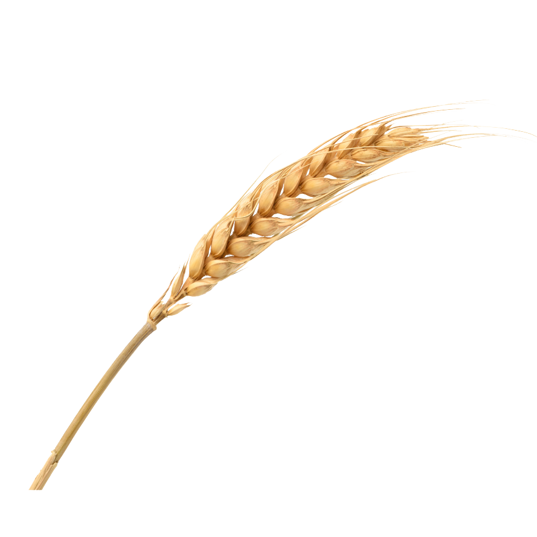
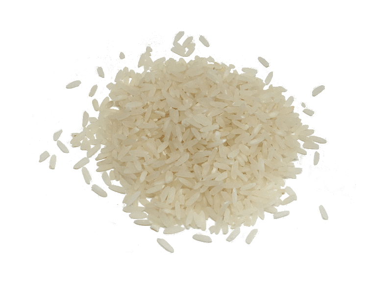

Cotações
Este site não é responsável pelo levantamento dos preços aqui presentes. Os dados são retirados do site Notícias Agrícolas em Cotações.
Carregando informações...
 
Este site não é responsável pelo levantamento dos preços aqui presentes. Os dados são retirados do site Notícias Agrícolas em Cotações.